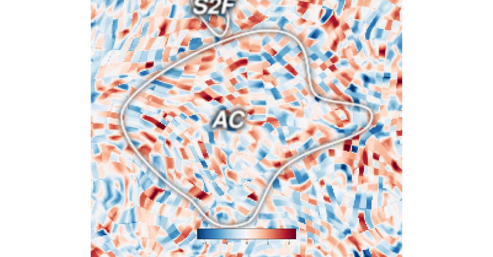
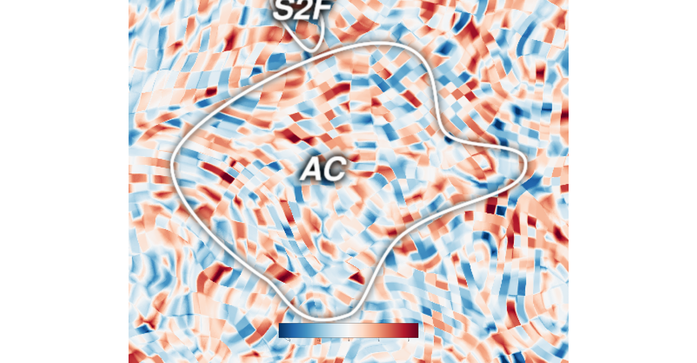

Note
Click here to download the full example code
Plotting a zoomed view of one ROI¶
Sometimes it is useful to create a flatmap that is zoomed in one just a single ROI. The location of the ROI can be inferred automatically, making it easy to show just the region around that ROI.
- 
- 
Out:
Generating a flatmap cache
# sphinx_gallery_thumbnail_number = 2
import cortex
import numpy as np
np.random.seed(1234)
from matplotlib import pyplot as plt
def zoom_to_roi(subject, roi, hem, margin=10.0):
roi_verts = cortex.get_roi_verts(subject, roi)[roi]
roi_map = cortex.Vertex.empty(subject)
roi_map.data[roi_verts] = 1
(lflatpts, lpolys), (rflatpts, rpolys) = cortex.db.get_surf(subject, "flat",
nudge=True)
sel_pts = dict(left=lflatpts, right=rflatpts)[hem]
roi_pts = sel_pts[np.nonzero(getattr(roi_map, hem))[0],:2]
xmin, ymin = roi_pts.min(0) - margin
xmax, ymax = roi_pts.max(0) + margin
plt.axis([xmin, xmax, ymin, ymax])
# Create dataset
data = cortex.Volume.random('S1', 'fullhead')
# Plot it using quickflat
cortex.quickshow(data)
# Zoom on just one region
zoom_to_roi('S1', 'AC', 'left')
# notice that the quality of this figure is now quite poor/grainy
# we can improve this by changing the 'height' argument to quickflat
cortex.quickshow(data, height=2048)
zoom_to_roi('S1', 'AC', 'left')
Total running time of the script: ( 0 minutes 49.930 seconds)